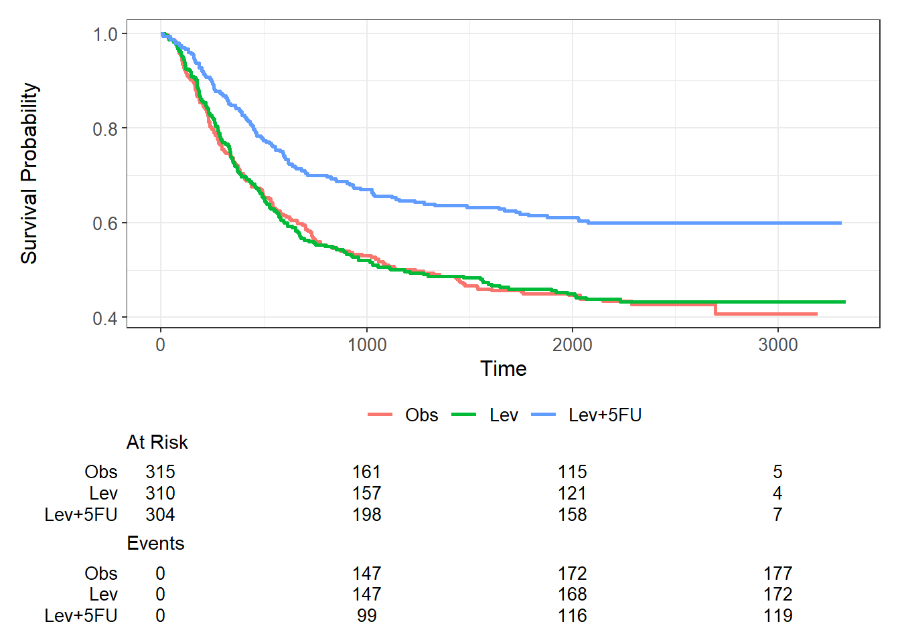
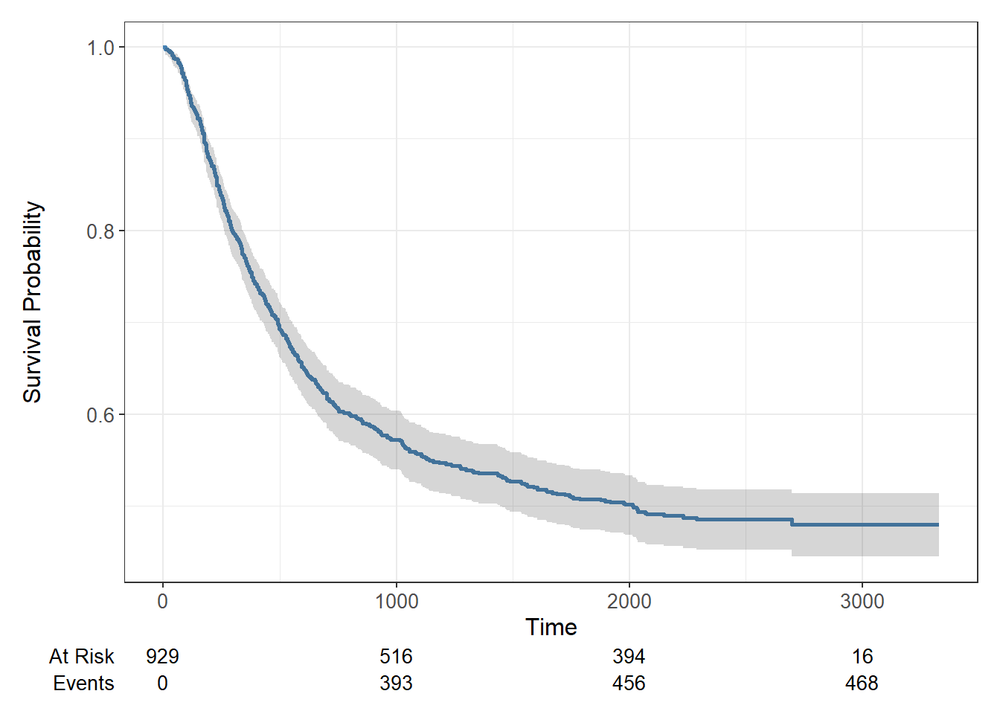
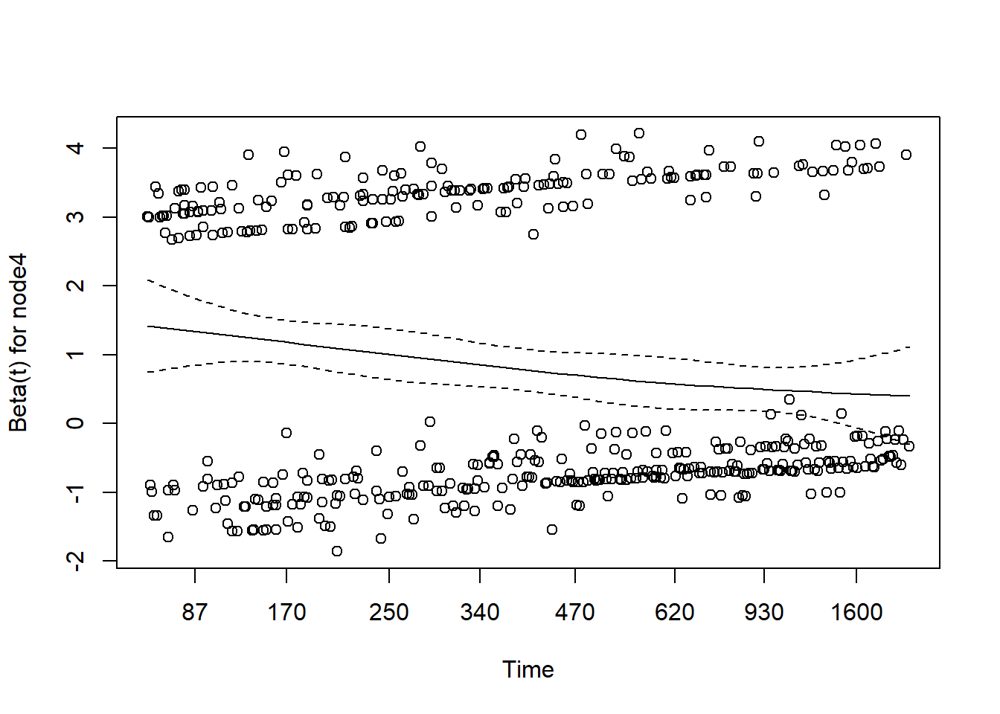
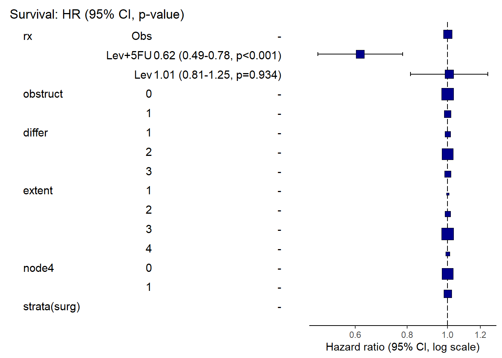

library(tidyverse)── Attaching core tidyverse packages ──────────────────────── tidyverse 2.0.0 ──
✔ dplyr 1.1.4 ✔ readr 2.1.5
✔ forcats 1.0.0 ✔ stringr 1.5.1
✔ ggplot2 3.5.0 ✔ tibble 3.2.1
✔ lubridate 1.9.3 ✔ tidyr 1.3.1
✔ purrr 1.0.2
── Conflicts ────────────────────────────────────────── tidyverse_conflicts() ──
✖ dplyr::filter() masks stats::filter()
✖ dplyr::lag() masks stats::lag()
ℹ Use the conflicted package (<http://conflicted.r-lib.org/>) to force all conflicts to become errorslibrary(survival)
library(ggsurvfit)
library(broom)
library(finalfit)
colon <- colon
colon |>
group_by(rx) |>
count()| rx | n |
|---|---|
| Obs | 630 |
| Lev | 620 |
| Lev+5FU | 608 |
colon.OS <- colon |>
filter(etype==1)
colon.TR <- colon |>
filter(etype==2)
colon.OS <- colon.OS |>
mutate(SurvObj =Surv(time,status) )
km_colon <- colon.OS |>
survfit(SurvObj ~1,conf.type="log-log",data=_)
km_colonCall: survfit(formula = SurvObj ~ 1, data = colon.OS, conf.type = "log-log")
n events median 0.95LCL 0.95UCL
[1,] 929 468 2018 1446 NArx_km_colon <- colon.OS |>
survfit(SurvObj ~rx,conf.type="log-log",data=_)
rx_km_colonCall: survfit(formula = SurvObj ~ rx, data = colon.OS, conf.type = "log-log")
n events median 0.95LCL 0.95UCL
rx=Obs 315 177 1236 772 2035
rx=Lev 310 172 1183 742 2018
rx=Lev+5FU 304 119 NA NA NAsummary(rx_km_colon,time=c(365,730))Call: survfit(formula = SurvObj ~ rx, data = colon.OS, conf.type = "log-log")
rx=Obs
time n.risk n.event survival std.err lower 95% CI upper 95% CI
365 227 88 0.721 0.0253 0.668 0.767
730 178 45 0.576 0.0279 0.519 0.629
rx=Lev
time n.risk n.event survival std.err lower 95% CI upper 95% CI
365 221 86 0.72 0.0256 0.667 0.767
730 170 49 0.56 0.0284 0.502 0.613
rx=Lev+5FU
time n.risk n.event survival std.err lower 95% CI upper 95% CI
365 252 48 0.841 0.0210 0.795 0.878
730 209 42 0.700 0.0265 0.645 0.749colon.OS |>
survfit2(SurvObj ~rx,conf.type="log-log",data=_) |>
ggsurvfit(linewidth=1)+
add_risktable()Warning in ggplot2::geom_blank(): All aesthetics have length 1, but the data has 875 rows.
ℹ Did you mean to use `annotate()`?
All aesthetics have length 1, but the data has 875 rows.
ℹ Did you mean to use `annotate()`?
All aesthetics have length 1, but the data has 875 rows.
ℹ Did you mean to use `annotate()`?
colon.OS |>
survfit2(SurvObj ~1,conf.type="log-log",data=_) |>
ggsurvfit( linewidth=1,color = "steelblue")+
add_risktable()+
add_confidence_interval()Warning in ggplot2::geom_blank(): All aesthetics have length 1, but the data has 750 rows.
ℹ Did you mean to use `annotate()`?Warning in ggplot2::geom_blank(): All aesthetics have length 1, but the data has 750 rows.
ℹ Did you mean to use `annotate()`?
All aesthetics have length 1, but the data has 750 rows.
ℹ Did you mean to use `annotate()`?
All aesthetics have length 1, but the data has 750 rows.
ℹ Did you mean to use `annotate()`?
All aesthetics have length 1, but the data has 750 rows.
ℹ Did you mean to use `annotate()`?
## a logrank test can be performed with the survdiff function
# comparing survival by gender
survdiff(Surv(time,status)~sex,data= colon.OS)Call:
survdiff(formula = Surv(time, status) ~ sex, data = colon.OS)
N Observed Expected (O-E)^2/E (O-E)^2/V
sex=0 445 229 219 0.433 0.815
sex=1 484 239 249 0.382 0.815
Chisq= 0.8 on 1 degrees of freedom, p= 0.4 #comparing survival by treatment
survdiff(Surv(time,status) ~ rx,data= colon.OS)Call:
survdiff(formula = Surv(time, status) ~ rx, data = colon.OS)
N Observed Expected (O-E)^2/E (O-E)^2/V
rx=Obs 315 177 151 4.62 6.82
rx=Lev 310 172 149 3.69 5.41
rx=Lev+5FU 304 119 169 14.69 23.04
Chisq= 23.1 on 2 degrees of freedom, p= 1e-05 ##cox PH model to assess the effect of gender on survival of patients
sex_cox <- colon.OS |>
coxph(SurvObj ~ sex,data=_)
sex_cox2 <- coxph(Surv(time,status) ~ sex,data=colon.OS)
sex_coxCall:
coxph(formula = SurvObj ~ sex, data = colon.OS)
coef exp(coef) se(coef) z p
sex -0.08361 0.91979 0.09248 -0.904 0.366
Likelihood ratio test=0.82 on 1 df, p=0.3662
n= 929, number of events= 468 summary(sex_cox)Call:
coxph(formula = SurvObj ~ sex, data = colon.OS)
n= 929, number of events= 468
coef exp(coef) se(coef) z Pr(>|z|)
sex -0.08361 0.91979 0.09248 -0.904 0.366
exp(coef) exp(-coef) lower .95 upper .95
sex 0.9198 1.087 0.7673 1.103
Concordance= 0.515 (se = 0.012 )
Likelihood ratio test= 0.82 on 1 df, p=0.4
Wald test = 0.82 on 1 df, p=0.4
Score (logrank) test = 0.82 on 1 df, p=0.4rx_cox <- coxph(Surv(time,status) ~ rx,data=colon.OS)
rx_coxCall:
coxph(formula = Surv(time, status) ~ rx, data = colon.OS)
coef exp(coef) se(coef) z p
rxLev -0.01512 0.98499 0.10708 -0.141 0.888
rxLev+5FU -0.51209 0.59924 0.11863 -4.317 1.58e-05
Likelihood ratio test=24.34 on 2 df, p=5.175e-06
n= 929, number of events= 468 summary(rx_cox)Call:
coxph(formula = Surv(time, status) ~ rx, data = colon.OS)
n= 929, number of events= 468
coef exp(coef) se(coef) z Pr(>|z|)
rxLev -0.01512 0.98499 0.10708 -0.141 0.888
rxLev+5FU -0.51209 0.59924 0.11863 -4.317 1.58e-05 ***
---
Signif. codes: 0 '***' 0.001 '**' 0.01 '*' 0.05 '.' 0.1 ' ' 1
exp(coef) exp(-coef) lower .95 upper .95
rxLev 0.9850 1.015 0.7985 1.2150
rxLev+5FU 0.5992 1.669 0.4749 0.7561
Concordance= 0.554 (se = 0.013 )
Likelihood ratio test= 24.34 on 2 df, p=5e-06
Wald test = 22.58 on 2 df, p=1e-05
Score (logrank) test = 23.07 on 2 df, p=1e-05## if we want to change the reference rx to Lev+ 5FU
colon.OS <- colon.OS |>
mutate(rx=fct_relevel(rx,"Lev+5FU"))
rx_cox2 <- coxph(Surv(time,status) ~ rx,data=colon.OS)
rx_cox2Call:
coxph(formula = Surv(time, status) ~ rx, data = colon.OS)
coef exp(coef) se(coef) z p
rxObs 0.5121 1.6688 0.1186 4.317 1.58e-05
rxLev 0.4970 1.6437 0.1193 4.166 3.11e-05
Likelihood ratio test=24.34 on 2 df, p=5.175e-06
n= 929, number of events= 468 summary(rx_cox2)Call:
coxph(formula = Surv(time, status) ~ rx, data = colon.OS)
n= 929, number of events= 468
coef exp(coef) se(coef) z Pr(>|z|)
rxObs 0.5121 1.6688 0.1186 4.317 1.58e-05 ***
rxLev 0.4970 1.6437 0.1193 4.166 3.11e-05 ***
---
Signif. codes: 0 '***' 0.001 '**' 0.01 '*' 0.05 '.' 0.1 ' ' 1
exp(coef) exp(-coef) lower .95 upper .95
rxObs 1.669 0.5992 1.323 2.106
rxLev 1.644 0.6084 1.301 2.077
Concordance= 0.554 (se = 0.013 )
Likelihood ratio test= 24.34 on 2 df, p=5e-06
Wald test = 22.58 on 2 df, p=1e-05
Score (logrank) test = 23.07 on 2 df, p=1e-05## if we want to change the reference rx to Lev+ 5FU for the entire colon dataset
rx_cox3 <- colon |> mutate(rx=fct_relevel(rx,"Lev+5FU")) |>
coxph(Surv(time,status)~rx,data=_)
summary(rx_cox3)Call:
coxph(formula = Surv(time, status) ~ rx, data = mutate(colon,
rx = fct_relevel(rx, "Lev+5FU")))
n= 1858, number of events= 920
coef exp(coef) se(coef) z Pr(>|z|)
rxObs 0.44101 1.55427 0.08391 5.256 1.47e-07 ***
rxLev 0.42011 1.52213 0.08451 4.971 6.67e-07 ***
---
Signif. codes: 0 '***' 0.001 '**' 0.01 '*' 0.05 '.' 0.1 ' ' 1
exp(coef) exp(-coef) lower .95 upper .95
rxObs 1.554 0.6434 1.319 1.832
rxLev 1.522 0.6570 1.290 1.796
Concordance= 0.545 (se = 0.009 )
Likelihood ratio test= 35.23 on 2 df, p=2e-08
Wald test = 33.11 on 2 df, p=6e-08
Score (logrank) test = 33.63 on 2 df, p=5e-08##fitting an extended cox model
rx_cox4 <- colon.OS |> mutate(rx=fct_relevel(rx,"Obs")) |>
coxph(Surv(time,status)~rx + obstruct + differ + extent + surg +node4,data=_)
summary(rx_cox4)Call:
coxph(formula = Surv(time, status) ~ rx + obstruct + differ +
extent + surg + node4, data = mutate(colon.OS, rx = fct_relevel(rx,
"Obs")))
n= 906, number of events= 458
(23 observations deleted due to missingness)
coef exp(coef) se(coef) z Pr(>|z|)
rxLev+5FU -0.485652 0.615296 0.119707 -4.057 4.97e-05 ***
rxLev 0.008829 1.008869 0.109119 0.081 0.935509
obstruct 0.231023 1.259888 0.115837 1.994 0.046112 *
differ 0.217782 1.243316 0.095457 2.281 0.022521 *
extent 0.449996 1.568305 0.116132 3.875 0.000107 ***
surg 0.243566 1.275791 0.102160 2.384 0.017118 *
node4 0.834321 2.303249 0.097377 8.568 < 2e-16 ***
---
Signif. codes: 0 '***' 0.001 '**' 0.01 '*' 0.05 '.' 0.1 ' ' 1
exp(coef) exp(-coef) lower .95 upper .95
rxLev+5FU 0.6153 1.6252 0.4866 0.778
rxLev 1.0089 0.9912 0.8146 1.249
obstruct 1.2599 0.7937 1.0040 1.581
differ 1.2433 0.8043 1.0312 1.499
extent 1.5683 0.6376 1.2490 1.969
surg 1.2758 0.7838 1.0443 1.559
node4 2.3032 0.4342 1.9031 2.788
Concordance= 0.659 (se = 0.013 )
Likelihood ratio test= 131.2 on 7 df, p=<2e-16
Wald test = 132.2 on 7 df, p=<2e-16
Score (logrank) test = 138.1 on 7 df, p=<2e-16## a more extended model
rx_cox5<- colon.OS |>
mutate(rx=fct_relevel(rx,"Obs"),
extent=as.factor(extent)) |>
coxph(Surv(time,status)~rx + obstruct + differ + extent + surg +node4,data=_)
rx_cox5Call:
coxph(formula = Surv(time, status) ~ rx + obstruct + differ +
extent + surg + node4, data = mutate(colon.OS, rx = fct_relevel(rx,
"Obs"), extent = as.factor(extent)))
coef exp(coef) se(coef) z p
rxLev+5FU -0.48707 0.61443 0.11973 -4.068 4.74e-05
rxLev 0.01065 1.01070 0.10932 0.097 0.9224
obstruct 0.23022 1.25888 0.11598 1.985 0.0471
differ 0.21689 1.24221 0.09547 2.272 0.0231
extent2 0.02770 1.02809 0.48040 0.058 0.9540
extent3 0.56832 1.76530 0.45295 1.255 0.2096
extent4 1.00611 2.73495 0.49289 2.041 0.0412
surg 0.24578 1.27862 0.10222 2.405 0.0162
node4 0.83629 2.30778 0.09763 8.566 < 2e-16
Likelihood ratio test=132 on 9 df, p=< 2.2e-16
n= 906, number of events= 458
(23 observations deleted due to missingness)summary(rx_cox5) Call:
coxph(formula = Surv(time, status) ~ rx + obstruct + differ +
extent + surg + node4, data = mutate(colon.OS, rx = fct_relevel(rx,
"Obs"), extent = as.factor(extent)))
n= 906, number of events= 458
(23 observations deleted due to missingness)
coef exp(coef) se(coef) z Pr(>|z|)
rxLev+5FU -0.48707 0.61443 0.11973 -4.068 4.74e-05 ***
rxLev 0.01065 1.01070 0.10932 0.097 0.9224
obstruct 0.23022 1.25888 0.11598 1.985 0.0471 *
differ 0.21689 1.24221 0.09547 2.272 0.0231 *
extent2 0.02770 1.02809 0.48040 0.058 0.9540
extent3 0.56832 1.76530 0.45295 1.255 0.2096
extent4 1.00611 2.73495 0.49289 2.041 0.0412 *
surg 0.24578 1.27862 0.10222 2.405 0.0162 *
node4 0.83629 2.30778 0.09763 8.566 < 2e-16 ***
---
Signif. codes: 0 '***' 0.001 '**' 0.01 '*' 0.05 '.' 0.1 ' ' 1
exp(coef) exp(-coef) lower .95 upper .95
rxLev+5FU 0.6144 1.6275 0.4859 0.7769
rxLev 1.0107 0.9894 0.8158 1.2522
obstruct 1.2589 0.7944 1.0029 1.5802
differ 1.2422 0.8050 1.0302 1.4978
extent2 1.0281 0.9727 0.4010 2.6360
extent3 1.7653 0.5665 0.7266 4.2891
extent4 2.7350 0.3656 1.0409 7.1862
surg 1.2786 0.7821 1.0465 1.5622
node4 2.3078 0.4333 1.9058 2.7945
Concordance= 0.661 (se = 0.013 )
Likelihood ratio test= 132 on 9 df, p=<2e-16
Wald test = 133.6 on 9 df, p=<2e-16
Score (logrank) test = 141.2 on 9 df, p=<2e-16## testing proportional hazard assumption...plot of scaled schonfield residuals should be a
## horizontal line i.e gradient = 0..so the included hypothesis tests whether
## the gradient differs from zero foor each variable. No variable significantly
## differs from zero at the 5% significance level.
cox.zph(rx_cox5) chisq df p
rx 0.0897 2 0.95614
obstruct 5.3381 1 0.02086
differ 12.7342 1 0.00036
extent 1.7102 3 0.63468
surg 1.2529 1 0.26300
node4 11.0287 1 0.00090
GLOBAL 32.3229 9 0.00018## Cox PH with Weibull distribution
weib_cox <- survreg(Surv(time,status) ~ rx,dist="weibull", data= colon.OS)
summary(weib_cox)
Call:
survreg(formula = Surv(time, status) ~ rx, data = colon.OS, dist = "weibull")
Value Std. Error z p
(Intercept) 8.6825 0.1424 60.96 < 2e-16
rxObs -0.8005 0.1752 -4.57 4.9e-06
rxLev -0.7583 0.1762 -4.30 1.7e-05
Log(scale) 0.3805 0.0411 9.25 < 2e-16
Scale= 1.46
Weibull distribution
Loglik(model)= -4114.6 Loglik(intercept only)= -4128.2
Chisq= 27.28 on 2 degrees of freedom, p= 1.2e-06
Number of Newton-Raphson Iterations: 5
n= 929 cox_weib <- colon.OS |>
mutate(rx=fct_relevel(rx,"Obs")) |>
survreg(SurvObj~ rx,dist = "weibull",data = _)
summary(cox_weib)
Call:
survreg(formula = SurvObj ~ rx, data = mutate(colon.OS, rx = fct_relevel(rx,
"Obs")), dist = "weibull")
Value Std. Error z p
(Intercept) 7.8820 0.1123 70.17 < 2e-16
rxLev+5FU 0.8005 0.1752 4.57 4.9e-06
rxLev 0.0423 0.1566 0.27 0.79
Log(scale) 0.3805 0.0411 9.25 < 2e-16
Scale= 1.46
Weibull distribution
Loglik(model)= -4114.6 Loglik(intercept only)= -4128.2
Chisq= 27.28 on 2 degrees of freedom, p= 1.2e-06
Number of Newton-Raphson Iterations: 5
n= 929 colon.OS <- colon.OS |> mutate(rx=fct_relevel(rx,"Obs"))
## the parfm package is used to fit cox weibull models directly
library(parfm)Loading required package: optimxweibull_cox <- parfm(Surv(time,status)~ rx,dist="weibull",frailty="none",data= colon.OS)
weibull_cox
Frailty distribution: none
Baseline hazard distribution: Weibull
Loglikelihood: -4114.57
ESTIMATE SE p-val
rho 0.684 0.017
lambda 0.005 0.001
rxLev+5FU -0.547 0.117 <.001 ***
rxLev -0.029 0.105 0.783
---
Signif. codes: 0 '***' 0.001 '**' 0.01 '*' 0.05 '.' 0.1 ' ' 1##final fit
dependent= "Surv(time,status)"
explanatory=c("rx","obstruct","differ","extent","surg","node4")
colon.OS |>
finalfit(dependent,explanatory,add_dependent_label = FALSE) |>
rename("Overall Survival"= label) |>
rename(" "=levels) | Overall Survival | all | HR (univariable) | HR (multivariable) | ||
|---|---|---|---|---|---|
| 14 | rx | Obs | 315 (33.9) | - | - |
| 13 | Lev+5FU | 304 (32.7) | 0.60 (0.47-0.76, p<0.001) | 0.61 (0.48-0.77, p<0.001) | |
| 12 | Lev | 310 (33.4) | 0.98 (0.80-1.21, p=0.888) | 1.00 (0.80-1.24, p=0.983) | |
| 10 | obstruct | 0 | 749 (80.6) | - | - |
| 11 | 1 | 180 (19.4) | 1.27 (1.02-1.58, p=0.036) | 1.26 (1.00-1.58, p=0.050) | |
| 1 | differ | 1 | 93 (10.3) | - | - |
| 2 | 2 | 663 (73.2) | 1.06 (0.77-1.45, p=0.724) | 0.97 (0.71-1.34, p=0.868) | |
| 3 | 3 | 150 (16.6) | 1.64 (1.15-2.36, p=0.007) | 1.39 (0.96-2.01, p=0.079) | |
| 4 | extent | 1 | 21 (2.3) | - | - |
| 5 | 2 | 106 (11.4) | 1.39 (0.54-3.55, p=0.494) | 1.04 (0.41-2.67, p=0.936) | |
| 6 | 3 | 759 (81.7) | 2.72 (1.13-6.57, p=0.026) | 1.79 (0.74-4.34, p=0.200) | |
| 7 | 4 | 43 (4.6) | 4.79 (1.85-12.39, p=0.001) | 2.80 (1.06-7.36, p=0.037) | |
| 15 | surg | 0 | 682 (73.4) | - | - |
| 16 | 1 | 247 (26.6) | 1.29 (1.06-1.57, p=0.011) | 1.27 (1.04-1.56, p=0.018) | |
| 8 | node4 | 0 | 674 (72.6) | - | - |
| 9 | 1 | 255 (27.4) | 2.43 (2.01-2.92, p<0.001) | 2.31 (1.91-2.80, p<0.001) |
#table <- colon.OS |> summary_factorlist(dependent,explanatory,p=TRUE,
#add_dependent_label = TRUE)
## testing the proportional hazard assumption
##The plot of scaled Schonfield residuals should be a straight line
colon.OS |>
coxphmulti(dependent,explanatory) %>%
cox.zph() %>%
{zph_result <<- .} %>%
plot(var = 6) ## numb of covariates
zph_result chisq df p
rx 0.0911 2 0.95545
obstruct 5.3191 1 0.02109
differ 12.7865 1 0.00035
extent 0.1097 1 0.74048
surg 1.2036 1 0.27260
node4 11.0690 1 0.00088
GLOBAL 30.3203 7 8.3e-05## stratified models are a way of dealing with violations of the PH assumption
explanatory <- c("rx","obstruct","differ","extent",'node4',"strata(surg)","node4")
colon.OS |>
finalfit(dependent,explanatory)| Dependent: Surv(time,status) | all | HR (univariable) | HR (multivariable) | ||
|---|---|---|---|---|---|
| 15 | rx | Obs | 315 (33.9) | - | - |
| 14 | Lev+5FU | 304 (32.7) | 0.60 (0.47-0.76, p<0.001) | 0.61 (0.48-0.77, p<0.001) | |
| 13 | Lev | 310 (33.4) | 0.98 (0.80-1.21, p=0.888) | 1.00 (0.80-1.24, p=0.984) | |
| 11 | obstruct | 0 | 749 (80.6) | - | - |
| 12 | 1 | 180 (19.4) | 1.27 (1.02-1.58, p=0.036) | 1.26 (1.00-1.58, p=0.048) | |
| 1 | differ | 1 | 93 (10.3) | - | - |
| 2 | 2 | 663 (73.2) | 1.06 (0.77-1.45, p=0.724) | 0.98 (0.71-1.34, p=0.881) | |
| 3 | 3 | 150 (16.6) | 1.64 (1.15-2.36, p=0.007) | 1.39 (0.96-2.00, p=0.080) | |
| 4 | extent | 1 | 21 (2.3) | - | - |
| 5 | 2 | 106 (11.4) | 1.39 (0.54-3.55, p=0.494) | 1.02 (0.40-2.63, p=0.961) | |
| 6 | 3 | 759 (81.7) | 2.72 (1.13-6.57, p=0.026) | 1.76 (0.73-4.29, p=0.210) | |
| 7 | 4 | 43 (4.6) | 4.79 (1.85-12.39, p=0.001) | 2.75 (1.04-7.22, p=0.041) | |
| 8 | node4 | 0 | 674 (72.6) | - | - |
| 9 | 1 | 255 (27.4) | 2.43 (2.01-2.92, p<0.001) | 2.31 (1.91-2.80, p<0.001) | |
| 10 | 1 | 255 (27.4) | 2.43 (2.01-2.92, p<0.001) | 2.31 (1.91-2.80, p<0.001) | |
| 16 | strata(surg) | - | - |
##Hazard ratio plot
colon.OS |>
hr_plot(dependent,explanatory)Dependent variable is a survival objectWarning: Removed 13 rows containing missing values or values outside the scale range
(`geom_errorbarh()`).Warning: Removed 1 row containing missing values or values outside the scale range
(`geom_point()`).
## finalfit of hazard ratio plot
colon.OS|> ff_plot(dependent,explanatory)Dependent variable is a survival objectWarning: Removed 13 rows containing missing values or values outside the scale range
(`geom_errorbarh()`).
Removed 1 row containing missing values or values outside the scale range
(`geom_point()`).